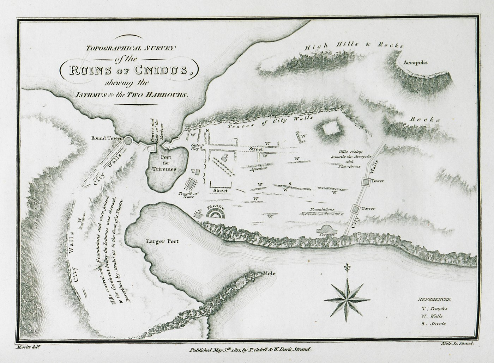

ⓘ
ⓘKnidos an der Spitze der Halbinsel Datça, wo Ägäis und Mittelmeer zusammentreffen, war eine dorische Stadt mit zwei Häfen. Hier soll die Aphrodite des Praxiteles gestanden haben; Eudoxos und Sostratos, Architekt des Pharos von Alexandria, stammten von hier. Theater, Tempel, das Rundpodium des Aphroditetempels und Häfen liegen in Terrassen am Hang.
⏳ Zeitreise
| Damals | Heute |
|---|---|
| Eine dorische Stadt mit zwei Häfen an der Spitze der Halbinsel Datça | Ein Hafen, wo Ägäis und Mittelmeer sich treffen |
| Hier soll die berühmte Aphrodite des Praxiteles gestanden haben | Ein Kunstwerk, das Besucher von weit her anzog |
| Heimat des Astronomen Eudoxos | Die Heimatstadt eines Wissenschaftlers |
| Sostratos, Baumeister des Leuchtturms von Alexandria, stammte aus Knidos | Heimat des Architekten eines weltberühmten Bauwerks |
| Löwe von Knidos: der riesige Löwe auf einem Grabmonument nahe der Stadt | Ein Wahrzeichen auf einem Kap, sichtbar für Seeleute |
| Eine Stadt, die in Terrassen den Hang hinabsteigt | Ein Küstenort, der zum Wasser hin abfällt |
🎧 Ein Tag in Knidos
Wir schreiben das Jahr 300 v. Chr. Schiffe suchen Schutz in einem der beiden Häfen; wie der Wind auch weht, der andere ist leicht anzulaufen. Am Kai werden Weinamphoren verladen.
Sie steigen die Terrassen hinauf zum Rundtempel der Aphrodite. Alle sind aus fernen Städten gekommen, um die berühmte Statue des Praxiteles zu sehen.
Am Nachmittag zeigt man Ihnen, wo ein Astronom seine Beobachtungen machte. Gegen Abend erblicken Sie auf einem Kap vor der Stadt den riesigen Löwen, der aufs Meer schaut.
Heute ist die Aphrodite verloren und nur aus Kopien bekannt. Der Löwe von Knidos wurde 1858 per Schiff nach London gebracht und steht im British Museum.
Die Zahlen sind Schätzungen; Quellen nennen unterschiedliche Werte. Die Zeichnung ist schematisch, nicht maßstabsgetreu.
Besucherleitfaden
🚌 Anreise
Knidos liegt am Kap Tekir an der Spitze der Halbinsel Datça (Muğla), etwa 35 km von Datça. Die Straße ist schmal und kurvig; mit Auto, Tour-Minibus oder im Sommer per Boot ab Datça.
⭐ Nicht verpassen
- Die zwei antiken Häfen
- Das runde Fundament des Aphroditetempels
- Großes und kleines Theater
- Die dorische Stoa und Terrassen
- Die Sonnenuhr
- Der Blick vom Kap, wo Ägäis und Mittelmeer aufeinandertreffen
🏺 Funde und Kunstwerke
- Die berühmte Aphrodite von Knidos des Praxiteles ist verloren und nur aus römischen Kopien bekannt (die bekannteste in den Vatikanischen Museen)
- Der Löwe von Knidos und die Demeter-Statue, im 19. Jahrhundert gefunden, sind im British Museum in London
👤 Bedeutende Persönlichkeiten
- Der Astronom und Mathematiker Eudoxos und Sostratos, Architekt des Leuchtturms von Alexandria, stammten aus Knidos
- Hier stand die Aphrodite des Praxiteles
💡 Tipps
Der Sonnenuntergang am Kap ist großartig, die Rückfahrt im Dunkeln aber anspruchsvoll. Mit dem Boot kann man im Hafen ankern. Wasser und Hut mitbringen; wenig Schatten.
Lageplan

Plan: Edward Daniel Clarke · Public domain · Wikimedia Commons
Historische Zeichnung – der heutige Grabungsstand kann abweichen.
Häufige Fragen
Wo liegt Ausgrabungsstätte Muğla Knidos?
Ausgrabungsstätte Muğla Knidos liegt in Datça, Muğla (Ägäis). Für die Anfahrt nutzen Sie die Karte oder den Routen-Button auf dieser Seite.
Wie viel Zeit braucht man für Ausgrabungsstätte Muğla Knidos?
Durchschnittliche Besuchsdauer: 1,5–3 Stunden.
Gilt der Museumspass in Ausgrabungsstätte Muğla Knidos?
In vom Ministerium betriebenen Museen und Stätten meist gültig.
Aus welcher Epoche stammt Ausgrabungsstätte Muğla Knidos?
Ausgrabungsstätte Muğla Knidos stammt aus der Epoche: Klassisch / Hellenistisch.
Was gibt es in der Nähe von Ausgrabungsstätte Muğla Knidos zu sehen?
Nächstgelegene Kulturstätten: Museum Zeki Müren Sanat (~38 km), Archäologisches Museum Bodrum Sualtı (~38 km), Bodrum Serçe Limanı Cam Batığı Sergi Salonu (~38 km).
Gibt es einen Audioguide für Ausgrabungsstätte Muğla Knidos?
Ja. Mit dem Hören-Button auf dieser Seite können Sie die Einführung in 7 Sprachen anhören (Türkisch, Englisch, Deutsch, Spanisch, Arabisch, Chinesisch, Hindi).
♿ Barrierefreiheit
Für diesen Ort liegen noch keine geprüften Angaben zur Barrierefreiheit vor. Wir sammeln Hinweise von Besuchern und Museen und veröffentlichen sie nach Prüfung.
In Museen und Ausgrabungsstätten des Ministeriums für Kultur und Tourismus haben Besucher mit Behinderung und eine Begleitperson gegen Vorlage eines Nachweises freien Eintritt. Bitte prüfen Sie die aktuellen Bedingungen vor dem Besuch. Ratgeber Barrierefreiheit →
♿ Angaben zur Barrierefreiheit senden
💬 Notizen und Fragen von Besuchern
Waren Sie schon hier? Hinterlassen Sie einen Tipp für andere Besucher oder stellen Sie eine Frage. Notizen werden nach Prüfung durch unser Team veröffentlicht.
✍️ Notiz oder Frage schreiben
Fotos
Übernachten und Essen in der Nähe
Möchten Sie Ihr Unternehmen hier zeigen? Werbung schalten